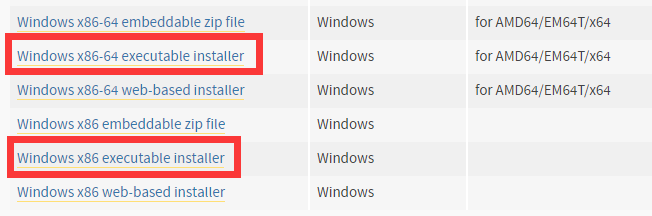
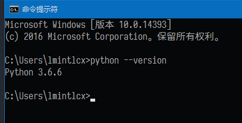
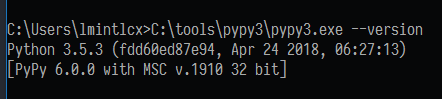
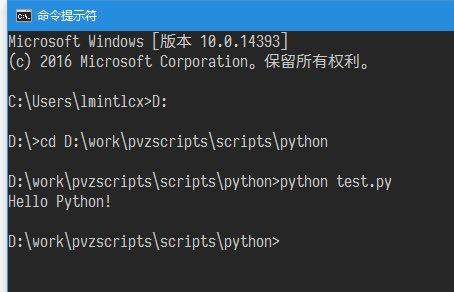

最近更新: 2018-10-29
蟒蛇大战僵尸(Python vs. Zombies, 以下简称 pvz.py)是一个以 Python 语言写成的用于植物大战僵尸"键控"的框架, 起源于 这里.
本项目可以免去配置构建键控脚本所需基础框架的繁重工作, 用户不需要了解其中的实现细节和复杂逻辑, 只需要使用暴露出来的接口函数, 从而可以将精力集中在轨道主流程处理上, 有效快速地完成脚本编写和视频制作.
Python 的语法相比于按键精灵的 Q 语言来说更加简洁, 另外本项目没有按键精灵的通用性考虑, 只针对特定版本的植物大战僵尸游戏, 直接调用底层 Windows API 来实现相关功能, 执行效率更高.
本项目只能在 Windows 7 SP1 以及更高版本上面使用, 目前支持的 Python 版本 >= 3.5, 只支持植物大战僵尸原版 1.0.0.1051 版本(英文原版和汉化二版).
本项目尚在开发中, 如有问题报告或者功能需求可联系作者. (QQ群 491610247)
这个视频 足够说明脚本能够达到的操作精度了. 视频采用 60fps 无损录制, ICE3 成功率约 90%, 全程无肉眼可见卡顿. 作为参考, 笔者使用的是 2015 年不到 4000 元的笔记本电脑, 双核低压 CPU + 核显, 想必早就落后于主流配置了.
本项目依赖于 Python3, 下载地址 https://www.python.org/downloads/
根据自己的操作系统位数选择合适的版本, 32 位选择"x86", 64 位选择"x86-64""AMD64".
如果不清楚自己的操作系统位数就选择 32 位的 Python 安装包.

勾选"Add Python 3.x to PATH"添加到环境变量.
打开命令提示符运行python --version检查是否安装成功.

对于便携版/多版本共存/其他解释器的用户, 使用绝对路径来运行 Python 解释器.

假设脚本文件名为 test.py.
1.如果启用了文件关联, 直接双击文件即可运行.
2.打开"命令提示符", 切换到脚本所在目录, (也可以直接在脚本所在目录按住"Shift"并右键选择"在此处打开命令窗口") 运行python test.py.

3.用专业的文本编辑器/集成开发环境调试运行.
正常情况下在命令界面按 Ctrl + C 即可结束脚本运行, 如果无法终止则去任务管理器里找到对应的 Python.exe 进程杀掉.
推荐几个在线教程网站.
需要了解的内容主要包括:
编写代码最好是用专业的文本编辑器.
Notepad++ 免费小巧
Sublime Text 3 轻量快速, 收费软件
Visual Studio Code 功能丰富, 墙裂推荐
Vim 编辑器之神, 过于专业不推荐
Emacs 神之编辑器, 过于专业不推荐
PyCharm 成熟好用, Python 专用, 社区版免费
Visual Studio 2017 宇宙最强 IDE, 过于庞大不推荐
不要用记事本!!! x 3
更多资料请于 植吧精品区 查阅.
以 PE.火焰十二炮 为例, 使用节奏 P6.
导入本模块所有函数.
选卡后启动自动收集线程.
变量 wave 值遍历 1~20, 针对波数编写操作.
通常采用 95cs 预判, 往 2-9 5-9 发射两枚玉米炮. 第 9/19 波预留 4 门炮用于手动收尾.
第 10 波推迟到刚刷新时发炮, 漏伴舞也没关系.
第 20 波预判 150cs 炮炸珊瑚, 落点 4-7. 等待 90cs 后(等效预判 150-90 = 60cs)往前场发射两枚玉米炮, 然后关底手动收尾.
完整代码如下:
# -*- coding: utf-8 -*-
from pvz import *
SelectCards()
StartAutoCollectThread()
for wave in range(1, 21):
if wave == 10:
Prejudge(0, wave)
Pao((2, 9), (5, 9))
elif wave == 20:
Prejudge(-150, wave)
Pao(4, 7)
Delay(90)
Pao((2, 9), (5, 9))
else:
Prejudge(-95, wave)
Pao((2, 9), (5, 9))
if wave in (9, 19):
SkipPao(4)
将框架主文件 pvz.py 和脚本pe12p_p6.py放在同一文件夹下.
按 Shift 同时右键, 点击"在此处打开命令窗口", 输入python pe12p_p6.py.
完整代码 scripts/python/pe12p_p6.py
FindWindow(class_name, window_name)根据窗口标题打开进程.
@参数 class_name(str): 窗口类名, 可省略为 None.
@参数 window_name(str): 窗口标题, 可省略为 None.
@返回值 (bool): 成功打开目标进程则返回 True.
FindPvZ()查找原版植物大战僵尸游戏进程. 该函数会在导入本模块时自动运行.
@返回值 (bool): 查找成功返回 True, 没找到或是版本不符则返回 False.
ReadMemory(data_type, *address, array=1)读取内存数据.
@参数 data_type(str): 数据类型, 取自 C/C++ 语言关键字, 包括 ["char", "bool", "unsigned char", "short", "unsigned short", "int", "unsigned int", "long", "unsigned long", "long long", "unsigned long long", "float", "double"]
@参数 address(int): 地址, 可为多级偏移.
@参数 array(int): 数量. 默认一个, 大于一个时需要显式指定关键字.
@返回值 (int/float/bool/tuple): 目标进程不可用时返回 None. 默认情况下返回单个数值, 获取多个数据则返回一个长度为指定数量的元组.
@示例:
ReadMemory("int", 0x6a9ec0, 0x768, 0x5560)
9990
ReadMemory("bool", 0x6a9ec0, 0x768, 0x54d4, array=33)
(True, False, True, True, False, True, True, False, True, False, False, False, True, False, False, True, False, False, True, True, False, False, False, False, False, True, False, False, False, False, False, False, True)
WriteMemory(data_type, values, *address)写入内存数据.
@参数 data_type(str): 数据类型, 取自 C/C++ 语言关键字, 包括 ["char", "bool", "unsigned char", "short", "unsigned short", "int", "unsigned int", "long", "unsigned long", "long long", "unsigned long long", "float", "double"]
@参数 values(int/float/bool/list/tuple): 需要写入的数据, 多个数据采用列表或者元组形式.
@参数 address(int): 地址, 可为多级偏移.
目标进程不可用时立即返回.
@示例:
WriteMemory("int", 9990, 0x6a9ec0, 0x768, 0x5560)
WriteMemory("unsigned char", [0xb0, 0x01, 0xc3], 0x0041d7d0)
LeftClick(x, y)鼠标左键单击.
@参数 x(int): 横坐标, 单位像素. 建议范围 [0, 799].
@参数 y(int): 纵坐标, 单位像素. 建议范围 [0, 599].
@示例:
LeftClick(108, 42) # 左键单击卡槽第一张卡片的位置
RightClick(x, y)鼠标右键单击.
@参数 x(int): 横坐标, 单位像素. 建议范围 [0, 799].
@参数 y(int): 纵坐标, 单位像素. 建议范围 [0, 599].
@示例:
RightClick(399, 299) # 右键单击场地中间位置
SafeClick()安全右键. 用于避免操作冲突.
ButtonClick(x, y)适用于模仿者按钮和菜单按钮的特殊点击.
@参数 x(int): 横坐标, 单位像素. 建议范围 [0, 799].
@参数 y(int): 纵坐标, 单位像素. 建议范围 [0, 599].
@示例:
ButtonClick(490, 550) # 选卡界面左键单击模仿者卡片
Sleep(time_cs):线程睡眠. 依赖于操作系统线程切换时间片精度, 误差较大.
@参数 time_cs(float): 时间, 单位 cs, 精度 0.1.
Delay(time_cs):游戏内部时钟延时. 相对于线程睡眠更精确.
只能在战斗界面([[0x6A9EC0]+0x7FC] == 3)使用. 游戏暂停时计时同样暂停.
@参数 time_cs(int): 时间, 单位 cs, 精度 1.
Countdown(time_cs, hugewave=False)等待直至本波刷新倒计时数值达到指定值. 调用时需要保证上一波已经刷出.
@参数 time_cs(int): 倒计时数值, 单位 cs, 精度 1. 范围 [200, 0].
@参数 hugewave(bool): 是否为旗帜波, 默认不是. 可用 (波数 % 10 == 0) 判断.
@示例:
Countdown(95) # 非旗帜波 95cs 预判
Countdown(55, True) # 旗帜波 55cs 预判
Prejudge(time_relative_cs, wave)等待上一波刷新并且当前时间戳与本波刷新时间点的差值达到指定值.
该函数只能在每波操作开始时执行一次. 用于重置本波刷新时间点数值.
@参数 time_relative_cs(int): 相对时间, 单位 cs, 精度 1. 建议范围 [-200, 400].
@参数 wave(int): 波数. 用于判断上一波是否已经刷出以及本波是否为旗帜波.
@示例:
Prejudge(-95, wave) # 95cs 预判
Prejudge(-55, wave) # 55cs 预判
Prejudge(-150, 20) # 第 20 波炮炸珊瑚
Prejudge(900 - 200 - 373, wave) # 900cs 波长反应炸
Until(time_relative_cs)等待直至当前时间戳与本波刷新时间点的差值达到指定值.
该函数需要配合 Prejudge() 使用.
@参数 time_relative_cs(int): 相对时间, 单位 cs, 精度 1. 建议范围 [-200, 2300].
@示例:
Until(-15) # 刷新前 15cs
SelectCards(seeds=None)选卡并开始游戏.
选择所有卡片. 点击开始. 更新加农炮列表. 等待开场红字消失.
@参数 seeds(list): 卡片列表, 参数为空默认选择八张紫卡和两张免费卡.
列表长度需与卡槽格数相同. 单张卡片 seed 可用 int/tuple/str 表示, 不同表示方法可混用.
seed(int): 卡片序号, 0 为豌豆射手, 47 为玉米加农炮, 对于模仿者这个数字再加上 48.
seed(tuple): 卡片位置, 用 (行, 列, 是否模仿者) 表示, 第三项可省略, 默认非模仿者.
seed(str): 卡片名称, 参考 _seeds_string, 包含了一些常用名字.
@示例:
SelectCards()
SelectCards([14, 14 + 48, 17, 2, 3, 30, 33, 13, 9, 8])
SelectCards([(2, 7), (2, 7, True), (3, 2), (1, 3), (1, 4), (4, 7), (5, 2), (2, 6), (2, 2), (2, 1),])
SelectCards(["寒冰菇", "复制冰", "窝瓜", "樱桃", "坚果", "南瓜", "花盆", "胆小", "阳光", "小喷"])
UpdatePaoList(cobs=None)更新玉米加农炮列表.
选卡时自动调用, 空参数则自动找炮. 若需要自定义炮组请在选卡函数后面使用.
如果出现炮落点位于自身附近快速点击无法发射的现象可通过调整炮序解决.
@参数 cobs(list): 加农炮列表, 包括若干个 (行, 列) 元组, 以后轮坐标为准.
@示例:
UpdatePaoList()
UpdatePaoList([(3, 1), (4, 1), (3, 3), (4, 3), (1, 5), (2, 5), (3, 5), (4, 5), (5, 5), (6, 5)])
ClickSeed(index)点击卡槽中的卡片.
@参数 index(int): 第几格
ClickShovel()点击铲子.
ClickGrid(row, col)点击场上格点.
@参数 row(float): 行, 可为小数
@参数 col(float): 列, 可为小数
Card(index, row, col)用卡操作.
@参数 index(int): 卡槽第几张卡片
@参数 row(float): 作用行
@参数 col(float): 作用列
@示例:
Card(10, 2, 9) # 将第 10 张卡片种在 2 行 9 列
Pao(*params)用炮操作.
@参数 params(int/tuple/list): 落点.
用两个数字指定落点行数和列数, 为了避免炮落点位于自身附近点击失效可设置第三个延时参数.
落点还可以为一至多个格式为 (行, 列) 的元组, 或者一个包含了这些元组的列表.
@示例:
Pao(2, 9)
Pao(5, 7, delay=30)
Pao((2, 9))
Pao((2, 9), (5, 9))
Pao([(2, 9), (5, 9), (2, 9), (5, 9)])
Coffee()点冰. 使用咖啡豆激活存冰.
优先点临时位. 该函数需要配合自动存冰线程使用.
SkipPao(num)跳过列表中一定数量的玉米炮, 通常用于 wave9/19 手动收尾.
@参数 num(int): 数量.
Shovel(row, col)用铲子操作.
@参数 row(float): 作用行
@参数 col(float): 作用列
@示例:
>>> Shovel(2, 3) # 铲掉 2 行 3 列的植物
RunningInThread将此装饰器应用到需要在子线程运行的函数上.
@示例:
@RunningInThread
def this_function_runs_on_subthread():
pass
StartAutoCollectThread(collect_items=[1, 2, 3, 4, 5, 6, 17], interval_cs=12)自动收集场上资源. 在单独的子线程运行.
为了避免操作冲突, 鼠标光标放到游戏窗口内部时会暂停收集.
@参数 collect_items(list): 需要收集的资源类型.
1.银币 2.金币 3.钻石 4.阳光 5.小阳光 6.大阳光 17.幼苗
@参数 interval_cs(float): 间隔, 单位 cs, 默认 12.
@示例:
StartAutoCollectThread()
StartAutoCollectThread([3, 4, 5, 6], 20) # 只收集钻石和阳光, 间隔 0.2s
StartAutoFillIceThread(spots=None, total=0xFFFFFFFF)自动存冰. 在单独的子线程运行.
@参数 spots(list): 存冰点, 包括若干个 (行, 列) 元组. 永久位在前, 临时位在后. 默认为场上现有存冰的位置.
@参数 total(int): 总个数, 默认无限.
@示例:
StartAutoFillIceThread()
StartAutoFillIceThread([(6, 1), (5, 1), (2, 1), (1, 1)], 10)
StartStopDancerThread()女仆秘籍. 通过暂停控制舞王/伴舞的跳舞/行走.
参考资料 https://tieba.baidu.com/p/3937751350
把自己编写的脚本文件xxx.py和框架文件pvz.py放在同一文件夹.
为了方便最好是在已有的脚本基础上进行修改.
声明文字编码为 UTF-8, 尤其是在内容包括汉字的时候.
# -*- coding: utf-8 -*-
导入本模块所有基础函数.
from pvz import *
按需定义几个可能会用到的函数:
# 樱桃位于第 4 格卡槽
# 在某行某列释放樱桃
def A(row, col):
Card(4, row, col)
# 睡莲位于第 5 格卡槽
# 核蘑菇位于第 6 格卡槽
# 咖啡豆位于第 3 格卡槽
# 在水路某行某列释放核蘑菇
def N(row, col):
Card(5, row, col)
Card(6, row, col)
Card(3, row, col)
# 寒冰菇位于第 1 格卡槽
# 在某行某列释放原版冰
def Ice(row, col):
Card(1, row, col)
# 模仿者寒冰菇位于第 2 格卡槽
# 在某行某列释放复制冰
def ImitaterIce(row, col):
Card(2, row, col)
# 补坚果/南瓜
pass
# 寒冰菇位于第 1 格卡槽
# 模仿者寒冰菇位于第 2 格卡槽
# 每 50.1s 存两个冰, 共 10 个
# 存冰函数在单独的线程里执行
@RunningInThread
def StoreIce():
for i in range(5):
SafeClick()
ClickSeed(2)
ClickGrid(3, 1)
ClickGrid(3, 2)
ClickGrid(3, 3)
ClickGrid(3, 4)
ClickSeed(1)
ClickGrid(3, 1)
ClickGrid(3, 2)
ClickGrid(3, 3)
ClickGrid(3, 4)
SafeClick()
if i != 4:
Delay(5010)
# 咖啡豆位于第 3 格卡槽
# 点冰
def UseIce():
SafeClick()
ClickSeed(3)
ClickGrid(3, 4)
ClickGrid(3, 3)
ClickGrid(3, 2)
ClickGrid(3, 1)
SafeClick()
# 中三路种垫材垫MJ
def DianCai():
Card(8, 2, 9)
Card(9, 3, 9)
Card(10, 4, 9)
# 铲垫材
def ChanDianCai():
Shovel(2, 9)
Shovel(3, 9)
Shovel(4, 9)
# 三叶草位于第 7 格卡槽
# 吹 10 次风扇
@RunningInThread
def NoFog():
for i in range(10):
Card(7, 6, 1) # 6-1
Delay(2700)
# 墓碑吞噬者位于第 6 格卡槽
# 吃墓碑
def EatGrave():
ClickSeed(6)
for r in range(1, 6): # 1~5
for c in range(5, 10): # 5~9
ClickGrid(r, c)
选卡并点击"Let's Rock!".
SelectCards(["复制冰", "寒冰菇", "咖啡豆", "樱桃", "坚果", "倭瓜", "花盆", "胆小", "阳光", "小喷"])
启动自动收集/自动存冰等线程.
# 收集钻石和阳光, 间隔 0.15s
StartAutoCollectThread([3, 4, 5, 6], 15)
# 往 6-1 5-1 2-1 1-1 累计存 10 个寒冰菇
StartAutoFillIceThread([(6, 1), (5, 1), (2, 1), (1, 1)], 8)
编写具体操作.
如果有相当多的波次操作完全相同, 可以用一个循环变量 wave 遍历 1~20, 对应每次选卡共 20 波僵尸的处理, 把相同操作的波次写在同一个分支里.
for wave in range(1, 21):
if wave == 10:
# 第 10 波
pass
elif wave == 20:
# 第 20 波
pass
elif wave in (1, 3, 5, 7, 9):
# 第 1/3/5/7/9 波
pass
else:
# 剩余波次操作
pass
不同波次操作几乎没有相同的情况下, 可以逐波写出来.
# 第 1 波
Prejudge(-95, 1)
pass
# 第 2 波
Prejudge(-95, 2)
pass
# 第 3 波
Prejudge(-95, 3)
pass
# ...
# 第 20 波
Prejudge(-150, 20)
pass
# 第 1 波
def wave1():
Countdown(95)
pass
# 第 2 波
def wave2():
Countdown(95)
pass
# 第 3 波, 操作同第 1 波
def wave3():
wave1()
# ...
# 第 20 波
def wave20():
Countdown(150, True)
pass
wave1()
wave2()
wave3()
# ...
wave20()
对于每一波的处理分为几个部分: 设定预判时间, 执行主要操作, 延时到本波刷新以后(使用 Prejudge 函数时可省略).
常用预判时间 95cs, 早于 149cs 可能炸不全巨人. 第 10 波部分僵尸出生点偏右, 为避免刷怪延迟因此推迟到 55cs, 再晚可能伴舞会出土, 同时可加上樱核补运算量. 第 20 波预判 150cs 可炮炸珊瑚.
第 9/19 波执行完主要操作后可能还需要额外用炮收尾, 所以要在对应波次的地方跳过一定数量的炮数, 使第 10/20 波自动选择的炮位相应地延后. 当然也可以算好时间写好脚本操作自动收尾.
第 20 波视情况炮炸珊瑚/冰消珊瑚/冰杀小偷/炮炸小偷.
Countdown和Prejudge的区别: Countdown只阻塞到刷新倒计时数值小于指定数值, 需要用户保证本波操作执行到刷新时间点之后再进行下一波操作. Prejudge参数为相对于刷新时间点的相对时间, 用于预判则为负值, 可自动判断本波的上一波有没有刷出.
Sleep和Delay的区别: Sleep借助于操作系统实现延时, 由于 Windows 不是实时操作系统所以实际睡眠时间会有波动. Delay使用读取游戏内部时钟来实现延时, 比线程睡眠更加精确, 也不用担心游戏暂停的影响, 不过只能在战斗界面使用.
Until的参数为与本波刷新时间点的差值, 需要与Prejudge配合使用.
Coffee需要与StartAutoFillIceThread配合使用.
以泳池场地第 1 波预判 95cs 延迟 80cs 的双边 PD 为例, 以下几种写法均可:
Countdown(95, False)
Pao(2, 9)
Pao(5, 9)
Sleep(80)
Pao(2, 9)
Pao(5, 9)
Sleep(15)
Countdown(95, 1 % 10 == 0)
Pao((2, 9), (5, 9))
Delay(80)
Pao((2, 9), (5, 9))
Delay(15)
# 推荐
Prejudge(-95, 1)
Pao((2, 9), (5, 9))
Delay(80)
Pao((2, 9), (5, 9))
Prejudge(-95, 1)
Pao([(2, 9), (5, 9)])
Until(-95 + 80)
Pao([(2, 9), (5, 9)])
在调试脚本的时候可以把选卡函数注释掉, 手工选卡进入游戏场景然后退回主界面, 找到存档位置设置存档只读. 这样每次调试的时候是直接从选完卡后开始, 省去重新选卡和切换画面的时间. 同样可以在积累了一定工作量(比如上半场前九波完成)之后存个档, 注释掉前面已完成的代码再继续之后步骤的编写调试. 等到全部完成后再从选卡阶段录制完整的表演视频.
通常情况下在命令提示符界面按Ctrl+C可以结束代码运行, 但是如果没有给子线程设置daemon=True的话按这个快捷键是不能在子线程还在运行的时候终止整个程序的, 这个时候直接去任务管理器里找到对应的 Python.exe 进程结束掉吧.
节奏为核代 P6, 每一波的操作如下:
1~9 PP PP PP PP PP N PP PP PP 10~19 PPA PP PP PP PP N PP PP PP PP 20 P-PP
具体描述一下:
第 1/2/3/4/5/7/8/9/11/12/13/14/16/17/18/19 波的操作为预判 95cs 往前场射两门炮, 落点 2-9 5-9.
第 10 波的操作为预判 0.55s 往前场射两门炮, 落点 2-9 5-9. 并且在 2-9 加个樱桃以期消除刷怪延迟. 炮飞行时间 373cs, 樱桃释放后 100cs 爆炸, 在 (373 - 100)cs 后释放樱桃让樱桃与玉米炮同时(不必要)生效.
第 20 波的操作为预判 150cs 炮炸珊瑚, 等待 95cs(等效 55cs 预判) 后再炸前场, 落点 2-9 5-9.
第 6/15 波使用核蘑菇代奏. 核蘑菇与玉米炮生效时间相同, 同样在预判过后 373cs. 点下咖啡豆到唤醒 198cs, 唤醒到生效 100cs, 所以要在预判 (373 - 198 - 100)cs 后释放核蘑菇. 第 6 波弹坑 3-9, 第 15 波弹坑 4-9.
第 9/19 波分别预留 4 门炮(极限出怪下)用于手动收尾操作.
完整代码 scripts/python/pe10p_p6.py
运行节奏为 ch6 |PPDD|IPP-PP|PPDD|IPP-PP|.
第 1 波 PPDD, 刷新前 95cs 两门预判炮 PP, 80cs 后接两门延迟炮 DD, 收撑杆并补刀红眼.
从点下咖啡豆到寒冰菇生效的时间较长, 第 2 波的预判冰点咖啡豆的操作放在第 1 波进行.
本波波长 600cs, 本波操作在刷新前 95cs 开始, 中途累计延时 80cs, 寒冰菇从点下咖啡豆到生效 298cs (唤醒 198cs + 生效 100cs).
采用 0.5s 预判冰, 即下一波在刷新后 50cs 被冻住. 计算可知在 DD 操作之后 (600 + 95 - 80 - 298 + 50)cs 点下咖啡豆即可.
第 2 波僵尸刷新即被冻住, 首先是两门热过渡炮处理掉矿工冰车, 落点可以左移避免炸到刚冒头的其他僵尸.
本波波长是由激活炮的时机决定的, 波长 1200cs, 预判 95cs, 中途累计延时 0, 玉米炮发射后 373cs 生效, 激活到下一波刷出 200cs.
计算得知在 IPP 操作之后 (1200 + 95 - 0 - 373 - 200)s 发射激活炮 PP 即可.
第 9/19 波额外留出一定的炮数手动收尾(也可以算好时间自动操作收尾).
第 20 波炮炸珊瑚, 拖够时间攒齐八炮秒杀红眼, 留下一只普僵拖时间.
完整代码 scripts/python/pe16p_ch6.py
完整代码 scripts/python/pe22p_ch6.py
完整代码 scripts/python/pe24p_p6.py